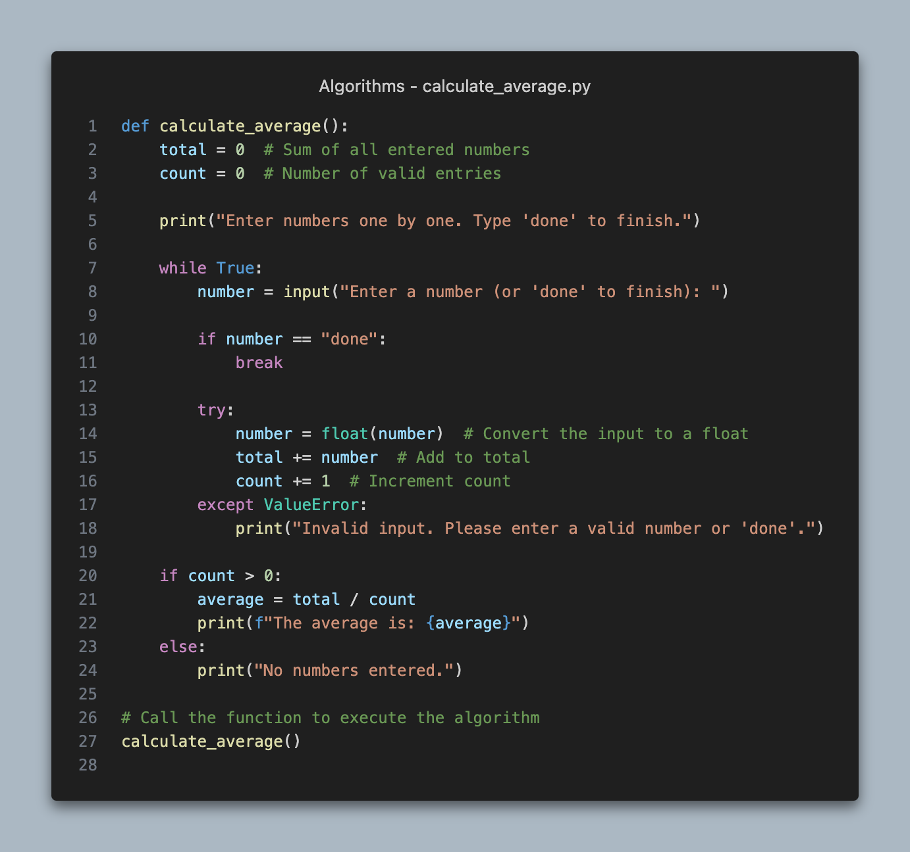
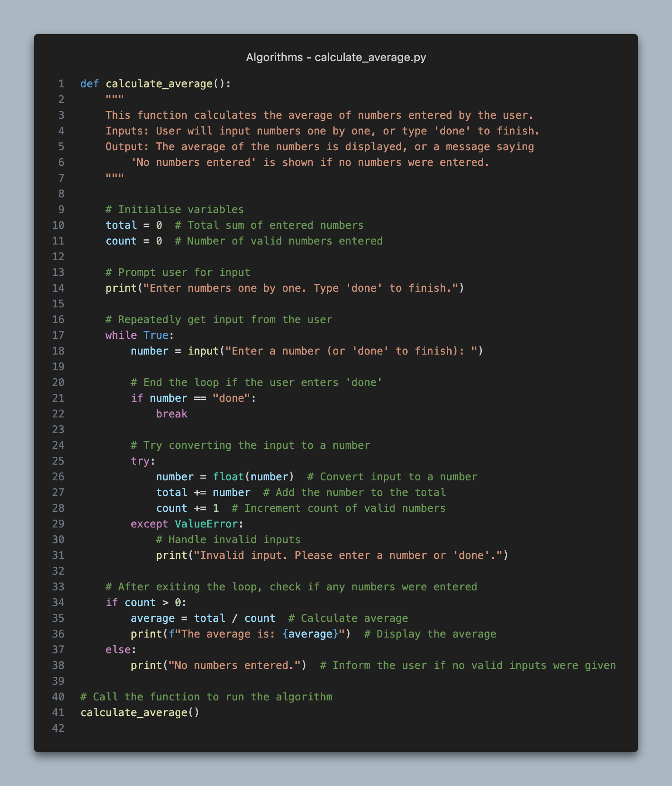

Syllabus
Develop, construct and document algorithms
Learning Intention and Success Criteria
Learning Intention - Students will:
- To develop, construct, and document algorithms effectively using appropriate methods and techniques to solve software engineering problems.
Success Criteria - Students can:
- Define a problem clearly and identify inputs and outputs.
- Construct an algorithm using pseudocode that follows correct structural conventions.
- Implement the algorithm in Python.
- Document the algorithm using comments and explanations.
Content
Algorithms are fundamental to software engineering, providing a structured approach to problem-solving by defining a series of steps to achieve a task. They are used to perform calculations, data processing, automated reasoning, and other functions within software systems.
To develop robust algorithms, engineers follow a systematic approach that includes defining the problem, constructing the solution using logical steps, and documenting the process for future reference and improvements.
-
Define the Problem: Clearly identify what the problem is and what you want the algorithm to achieve. Specify the inputs, processes, and outputs.
-
Develop the Algorithm Using Pseudocode: Write the algorithm using proper pseudocode syntax, ensuring it uses the control structures of sequence, selection, repetition, and subroutines.
-
Construct the Algorithm: Translate the pseudocode into a working program using a programming language like Python.
-
Document the Algorithm: Add comments to explain the purpose of each part of the algorithm, making it easy for others to understand.
Example Problem
We are tasked with creating an algorithm that calculates the average of a list of numbers entered by a user. We will begin by defining our problem concretely, then create a scaffold of it in pseudocode, translate to Python and ensure we have included ample documentation.
Problem Definition
Purpose: Before constructing an algorithm, we need to clearly define the problem we are solving. This includes understanding the inputs, the expected outputs, and the processes needed to transform inputs into outputs.
Details:
- Input: What data will the algorithm accept? Define the type of input, how it will be provided, and any constraints on the data (e.g., numbers, text).
- Process: What operations or transformations need to be applied to the input? Define any mathematical operations, logic, or decision-making steps.
- Output: What is the expected result? Clearly define what should be returned, displayed, or saved.
- Problem: We need an algorithm to calculate the average of a list of numbers input by the user. If no numbers are entered, the algorithm should notify the user.
- Inputs: A list of numbers provided by the user, ending with the word "done".
- Process: Sum the numbers and divide by the total count of numbers.
- Outputs: The average of the numbers, or a message saying "No numbers entered."
Develop the Algorithm Using Pseudocode
The next step is to write the logic of the algorithm in pseudocode, following the standard structure (sequence, selection, repetition) and ensuring proper formatting and indentation. Pseudocode provides a high-level, language-independent way to plan out the algorithm.
Recall:
- Keywords: Use capitalised control structure keywords such as
BEGIN,IF,WHILE,FOR,ENDIF,END. - Control Structures:
- Sequence: Steps executed in order.
- Selection: Conditional statements like
IF-ELSE. - Repetition: Loops such as
WHILEorFOR.
- Indentation: Use indentation to make the control structure clear. For each
BEGIN, ensure you have a correspondingEND. - Subroutines: If the algorithm needs to perform repetitive tasks, break it down into subroutines for better modularity.
BEGIN CalculateAverage
SET total TO 0
SET count TO 0
DISPLAY "Enter numbers one by one. Type 'done' to finish."
REPEAT
GET number
IF number != "done" THEN
SET total TO total + number
SET count TO count + 1
ENDIF
UNTIL number = "done"
IF count > 0 THEN
SET average TO total / count
DISPLAY "The average is: ", average
ELSE
DISPLAY "No numbers entered."
ENDIF
END CalculateAverage
Construct the Algorithm in Python
Now, translate the pseudocode into Python code, ensuring that each part of the code is explained with comments. Intrinsic documentation and inline comments should be integrated during the construction phase, not afterward.
Details:
- Variable Names: Use descriptive variable names to enhance readability.
- Inline Comments: Add comments as you write code to explain what each part does, especially at points where logic or calculations occur. Use comments sparingly for obvious sections and more thoroughly for complex areas.
- Error Handling: Implement error handling where needed (e.g., if user input is invalid).
- Modular Design: Break down complex processes into functions for modularity.

Document the Algorithm
Documenting an algorithm involves making sure that every piece of code is clearly explained through comments and that the structure of the code itself is easy to follow. It ensures that others (and yourself, in the future) can understand and maintain the code.
Details:
- Docstrings: Use function-level docstrings to describe the overall purpose of the algorithm, the parameters it takes, and the expected output. In Python, this is done at the start of each function.
- Inline Comments: For each key step in the code, provide comments that explain what the code is doing. Keep comments concise but clear.
- Structure: Ensure the structure of the code (e.g., indentation and function naming) supports readability and maintainability.

Theory
- Direct the students to an activity to be completed in their OneNote
Practical
- Provide instructions for a practical activity or direct the students to an EdStem activity
Sources
- List sources here